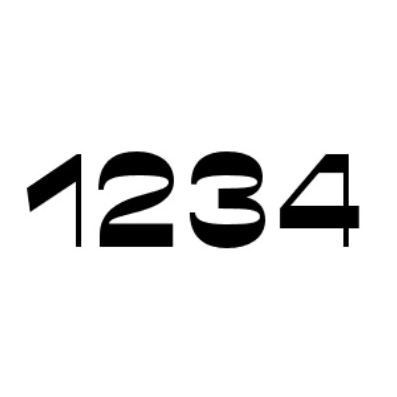

UX/UI
Sound Cells
Within NYU's Music Experience Design Lab
Developed a web accessible digital audio workspace for sight impaired musicians.
Utalized web accessible fonts, contrast, and spacial organization to increase usability.


Graphics Design
Playing Card Pips
Created using Adobe Illustrator.
Inspired by the elements.
Graphics Design
Year 3000
Created using Adobe Illustrator.
Inspired by a utopia set in the year 3000.

Blogger
Social Media
Grew Instagram account through unique fashion, eye-catching makeup, and personal style.
Created made-to-order fashion: Designed, reworked and sold 1000+ clothes and raised over $10,000 for Music and Memory (a nonprofit helping people with Alzheimers).
Worked with brands such as Daniel Wellington, Lokai Bracelets, and EBDenim and others.

1234
There is a divine mathematical order within our universe.We at TwelveThirtyFour hold that notion close to our hearts.
It is said that the universe is built on a foundational number: 10.
As the numbers 1 + 2 + 3 + 4 add up to 10, the number 1234 represents each unique step we must take within our individual journey.
It's about having faith in the process. Our mission is to spread collectivism, individualism and compassion through our work.
Our Founder's Story
It all started when Rachel Berlow-Josepho was just 2 years old: Pulling apart her mother's cassette tapes and disassembling cd players in awe of the complexities of this world. She still lives every moment with the same spirit of curiosity and tries to understand everything about everything.
Rachel has long aspired to create and contribute with a family line of inventors and technologists. Her great-grandfather, Anatol Josepho, has been her role model since she can remember. His story of how he invented the photo booth was one of perseverance and strength to overcome adversity.
Her father, Rustin Berlow, cool uncles Myer Berlow (co-founder of AOL), Sam Berlow (entrepreneur) and David Berlow (Font Bureau), and cool auntie Rebecca Berlow have been integral mentors to Rachel as she grows into the person she has long dreamt of becoming.
Currently, Rachel is attending New York University, majoring in integrated digital media, concentrating on user experience and product design at the engineering school.
She is a strong leader who inspires action and collective strength. Driven to promote positivity, equality, and quality.